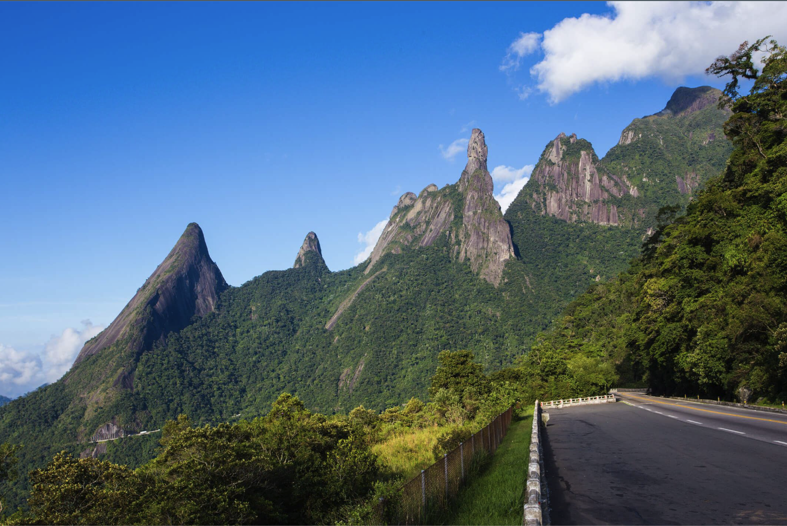

A Hidden Gem in Rio's Crown
Get to know
Nature
Natural splendor
Nestled in the heart of Brazil's Rio de Janeiro state, Teresópolis is a city that captures the imagination and soothes the soul with its stunning natural beauty. Known affectionately as 'Tere' to the locals, this enchanting city lies in the embrace of the Serra dos Órgãos mountain range, offering breathtaking views and a haven for nature enthusiasts.
A famous Brazilian singer and composer once said...
It's a place where the heart rests, and the eyes feast on the beauty of creation."
This sentiment perfectly encapsulates the serene and picturesque vibe of the city.
The Local Charm
Teresópolis is not just about the scenic landscapes; it's also a melting pot of culture and community spirit. Locals, with their warm smiles and laid-back attitude, add to the city's charm, making visitors feel right at home.
The city's streets are a blend of the old and the new, where traditional markets buzz alongside contemporary cafes and boutiques.
For adventurers and tourists alike, Teresópolis serves as a gateway to the Serra dos Órgãos National Park, known for its iconic 'Dedo de Deus' (God's Finger) peak and a plethora of hiking trails that range from leisurely walks to challenging climbs, each offering panoramic views and encounters with the region's diverse wildlife.
The taste of the city
The culinary scene in Teresópolis is as rich and varied as its landscapes. Here are the top 5 local restaurants that promise a delightful gastronomic journey:
Viva Itália - A cozy spot renowned for its authentic Italian cuisine, perfect for a romantic dinner or a family feast.
Casa da Picanha - Offers the best of Brazilian barbecue, serving succulent cuts of meat in a rustic yet welcoming setting.
Comida com Arte - A fusion restaurant where local ingredients meet global culinary techniques, creating a unique and flavorful experience.
Serra Grill - Known for its panoramic views and extensive buffet, this restaurant combines great food with stunning nature.
Tempero com Arte - A charming bistro that serves traditional Brazilian dishes, made with love and served with a smile.
In conclusion
Teresópolis, with its natural wonders, friendly locals, and vibrant food scene, is a destination that offers something for everyone. Whether you're seeking adventure, relaxation, or culinary delights, this picturesque city is sure to provide an unforgettable experience. In Teresópolis, every visit feels like a discovery of nature's timeless beauty and the warm-hearted spirit of its people.